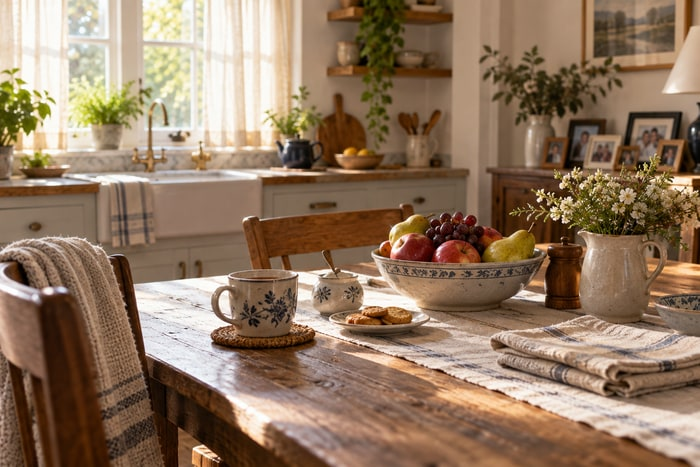
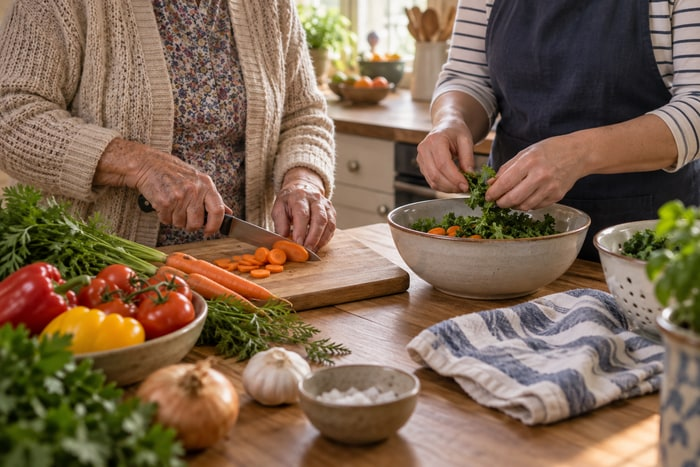

Shared moments
Start with the day as it is.
A fictional home support concept
Companionship and practical help, shaped around familiar routines.
A first conversation can start with what would make this week easier.
Support, not a script
This fictional example keeps service scope tangible: a shared meal, company on an errand, or practical help with a daily routine. The actual provider's services and eligibility must be confirmed.
Explore a first conversationKeep the familiar close
Good support starts by listening to what already works at home, then agreeing on where a little help would make a difference.
Questions families askOne plan at a time
Share the routine that feels hardest. The next conversation can clarify possible support, practical details, and whether the service is a fit.
Talk through a need
A short service index
Use verified offerings only. These fictional examples show how a local provider can make scope easy to scan.
Small scenes from home
Start with the day as it is.

Practical help, agreed together.

Time for conversation and connection.

Support can fit around home.

Small tasks can matter.

Choose the pace that feels right.
Questions worth asking
Describe the real intake process and what a family should expect before arranging a visit.
Use the provider's confirmed process for reviewing a care plan and changing scheduled help.
List only the service area the provider confirms. Do not imply a street address or physical office if none exists.
Begin without pressure
This sample form is for design review only. It does not transmit or store personal information.